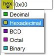

"bcd" format, e.g. the value "32":

CANdelaStudio Before 8.5 SP2: Editing of BCD Value in BCD Format
"hex" format, e.g. the same value "0x20":

CANdelaStudio Before 8.5 SP2: Editing of BCD Value in Hex Format
Values for a data object must conform with the data type that the data object references.
CANdelaStudio allows editing in different number formats:

Value Editing with Different Formats
[VALUI-R020-BCD] for values of encoding "Unsigned" and "Signed...", the CANdelaStudio edit controls shall not offer the editing format "BCD" (CDS-38786 8.5 SP2).
Note: with the addition of this restriction in 8.5 SP2, no migration of the display format is necessary, since the CANdela data model allows [DTDEP-R120]...
CANdelaStudio accepts comma "," and point "." as a decimal point, e.g. "3.1415" or "2,71828".
Array values are specified by separating the elements by blank, like 0x01 0x02 0x03. CANdelaStudio also accepts semicolon ";" as a separator.
[VALUI-R050 BCD Editing Formats] for values of encoding BCD (see [DTENC-R050]), CANdelaStudio edit controls shall offer the editing formats "Decimal" and "Hex", no others.
[VALUI-R050-Dec] For editing format "Decimal", the edit controls shall show and edit the data model integer value as hex digits 0..9.
[VALUI-R050-Hex] For editing "Hex", dito with prefix "0x" (as for other encodings).
[VALUI-R050-Invalid] For invalid BCD values, the edit control shall initially show "0".
[VALUI-R050-Digits] CANdelaStudio shall limit the input to the digits 0..9.
[VALUI-R050-Length] CANdelaStudio shall limit the number of digits to <number of bytes> * 2.
Example:
Note: unfortunately, the meaning of BCD values in CANdelaStudio before 8.5 SP2 has not been clear.
Before 8.5 SP2, CANdelaStudio provided editing of BCD Values in...
"bcd" format, e.g. the value "32":
CANdelaStudio Before 8.5 SP2: Editing of BCD Value in BCD Format
"hex" format, e.g. the same value "0x20":
CANdelaStudio Before 8.5 SP2: Editing of BCD Value in Hex Format
This was irritating and resulted in the BCD Value Normalization in 8.5 SP2.
Editing of BCD Values since 8.5 SP2 is described above [VALUI-R050].